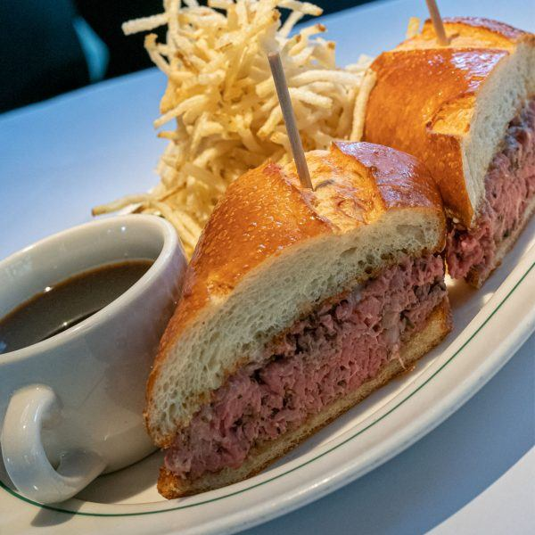

Prime Rib Sandwich

Both simple and complex, the finished product of this recipe is an experience words have a hard time bringing justice to.
Technically only four ingredients and a side of hot au jous, this is the kind of sandwich that may be difficult to make at home because the first ingredient is leftover high quality prime rib.
Combined with horseradish aioli, between two thick grilled pieces of texas toast, when executed properly, this may be the best sandwich I have ever had.
Ingredients
- 4 oz thinly sliced left over prime rib
- 1 Tbsp horseradish aioli
- 2 slices thick cut texas toast
- Butter for brushing
Steps
- Brush butter on one side of each pieces of thick cut texas toast and place on hot flat top grill until golden brown and crispy on one side
- While the bread is cooking, warm the thinly sliced prime rib. The key to to warm it through without over cooking it. You want the meat to maintain its red color. Not all of the meat will remain red, but you do want a significant amount of it to be red, but warm. This can be achieved via microwave (effective but not recommended) or by quickly throwing it into a hot pan. Both methods should only take 20-30 seconds.
- Remove the bread from the grill and spread the horseradish aioli on what will become the top half of the sandwich
- When the meat is warmed, place it directly on the remaining piece of bread, and top it with the bread with the aioli.
- Cut diagonally (to make for easier dipping), and serve with hot au jous.
- I recommend dipping each individual bite for the best experience!